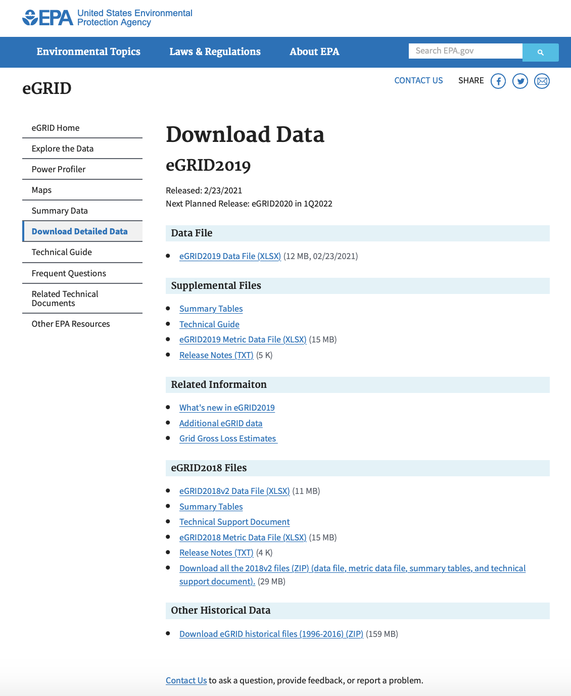
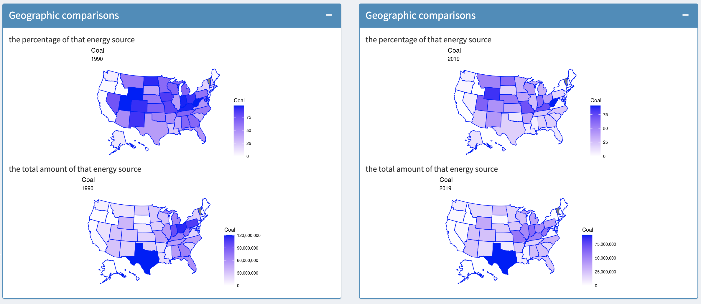
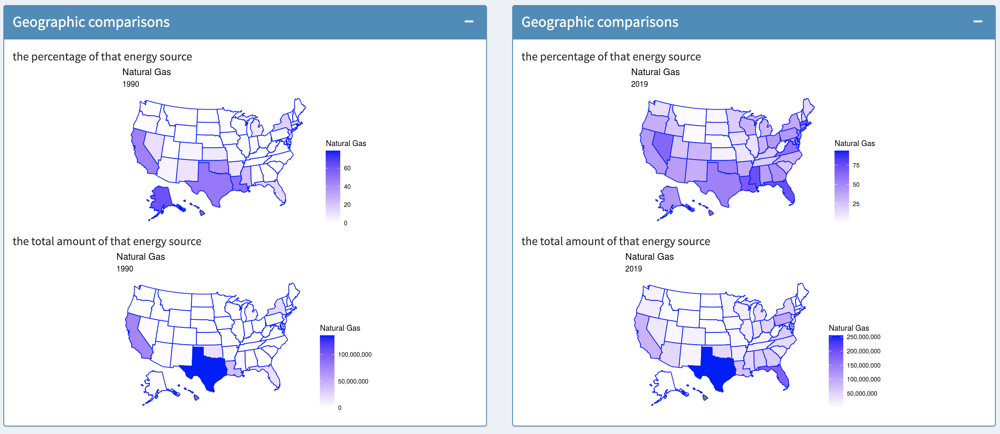
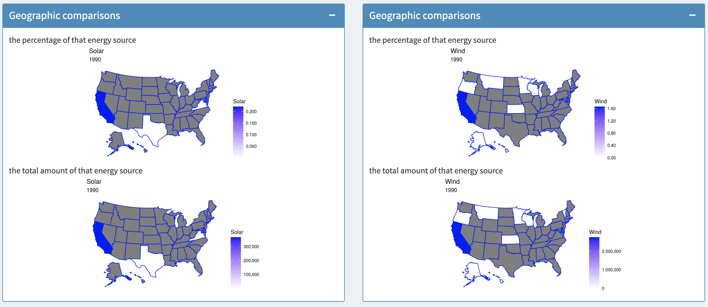
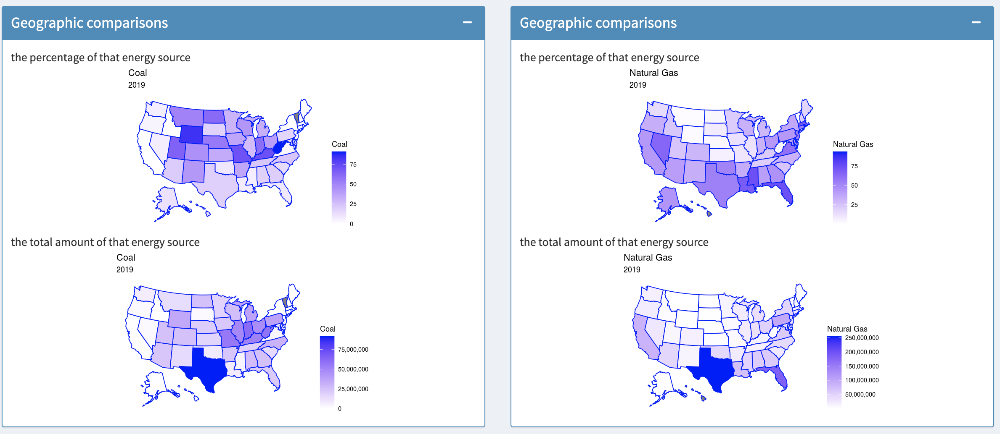

Project 2

Introduction
This project focuses on using R, Shiny, ggplot2 and leaflet to give people an interactive interface and visualize data on electrical power generation in the US.
Different from project 1, Here we dive inside the state boundaries to look at the actual locations of the different plants (based on their latitude and longitude) and see how geographic as well as political boundaries affect coal / gas / solar / hydro / etc energy production in the US.
In this project, we use Leaflet, which is one of the most popular open-source libraries for interactive maps, to visualize the data.
The libraries used in this project are as follows:
- library(shiny)
- library(shinydashboard)
- library(readxl)
- library(ggplot2)
- library(lubridate)
- library(DT)
- library(jpeg)
- library(grid)
- library(leaflet)
- library(scales)
- library(usmap)
- library(stringr)
There are four sections for this app—Plants in Illinois, Split screen visualization, Plants in the US, Plants added or idled.
Plants in IllinoisIn this page, is shows a properly centered and scaled leaflet map of Illinois showing the plant data in 2018. Power plants are colored by type.
For input control, There are sets of check boxes, one for each energy source, plus 'all' (where all is the default selection), renewables, and non-renewables, allowing the user to filter which energy sources are shown on the map. Besides, a reset button is offered to go back to the original view.
Split screen visualizationOn the basis of the previous page, some functions have been expanded.
The original data is available from Environmental Protection Agency(EPA).
Mainly, we focus on
For the first data file, we only look at data from the PLNT18 sheet. This sheet contains data from all plants in 2018 for all 50 US states.
For the compressed file, we only look at EGRDPLNT00 in eGRID2000_plant.xls PLNT10 in eGRID2010_Data.xls. These sheets contain data from all plants for all 50 US states in 2000 and 2010 respectively.
Next, I make some changes to the data files before loading them into R to shrink the size of the data files and improve efficiency.
The strategy is to keep only the columns that will be used in this project.
For PLNT18 in egrid2018_data_v2.xlsx:
"SEQPLT18" "PSTATABB" "PNAME" "ORISPL" "LAT" "LON" "PLPRMFL" "PLFUELCT" "PLNGENAN"
"PLGENACL" "PLGENAOL" "PLGENAGS" "PLGENANC" "PLGENAHY" "PLGENABM" "PLGENAWI" "PLGENASO" "PLGENAGT"
"PLGENAOF" "PLGENAOP" "PLGENATN" "PLGENATR" "PLCLPR" "PLOLPR" "PLGSPR" "PLNCPR" "PLHYPR"
"PLBMPR" "PLWIPR" "PLSOPR" "PLGTPR" "PLOFPR" "PLOPPR" "PLTNPR" "PLTRPR"
For EGRDPLNT00 in eGRID2000_plant.xls:
"SEQPLT00" "PSTATABB" "PNAME" "ORISPL" "LAT" "LON" "PLPRIMFL" "PLNGENAN" "PLGENACL"
"PLGENAOL" "PLGENAGS" "PLGENANC" "PLGENAHY" "PLGENABM" "PLGENAWI" "PLGENASO" "PLGENAGT" "PLGENAOF"
"PLGENATN" "PLGENATR" "PLCLPR" "PLOLPR" "PLGSPR" "PLNCPR" "PLHYPR" "PLBMPR" "PLWIPR"
"PLSOPR" "PLGTPR" "PLOFPR" "PLTNPR" "PLTRPR"
For PLNT10 in eGRID2010_Data.xls:
"SEQPLT10" "PSTATABB" "PNAME" "ORISPL" "LAT" "LON" "PLPRMFL" "PLFUELCT" "PLPFGNCT"
"PLNGENAN" "PLGENACL" "PLGENAOL" "PLGENAGS" "PLGENANC" "PLGENAHY" "PLGENABM" "PLGENAWI" "PLGENASO"
"PLGENAGT" "PLGENAOF" "PLGENAOP" "PLGENATN" "PLGENATR" "PLCLPR" "PLOLPR" "PLGSPR" "PLNCPR"
"PLHYPR" "PLBMPR" "PLWIPR" "PLSOPR" "PLGTPR" "PLOFPR" "PLOPPR" "PLTNPR" "PLTRPR"
1 Coal 1990 V.S. Coal 2019
From the geographical comparison, we can see that the relationship between total coal production in each state has changed little over time, but the percentage difference has changed significantly. This shows that other energy sources have undergone significant changes at this time, and people's dependence on coal for energy is also declining.
 2 Natural gas 1990 V.S. Natural gas 2019Natural gas's share of energy in U.S. states is increasing day by day. From the comparison between 1990 and 2019, it is also obvious that the East Coast of the United States has attached great importance to the development of natural gas in these years.
 3 Solar 1990 V.S.Wind 1990The third one is to show the renewable energy source in 1990. The gray area in the picture is the area without data, that is, the state does not produce this energy . It is not difficult to see that the West Coast of the United States is a pioneer in the development of renewable energy.
 4I didn't do this part
5 Coal 2019 V.S. Natural gasThe last one is a comparison of the two most important energy sources in the US: coal V.S. natural gas. From this picture, we can get the information that the energy production in the coastal areas of the United States is dominated by natural gas, while the inland areas are dominated by coal.
 Introduction videoReview
To me this project is challenging and frustrating. Even if I have put a lot of effort on it, however, there is stll a lot of room for improvement .
- User interface: I don’t think I have designed it very well. My interface has exceeded the screen limit, forcing users to scroll to browse the entire page.
- Code: I think my code has a lot of redudant parts, although the app itself does not shows.